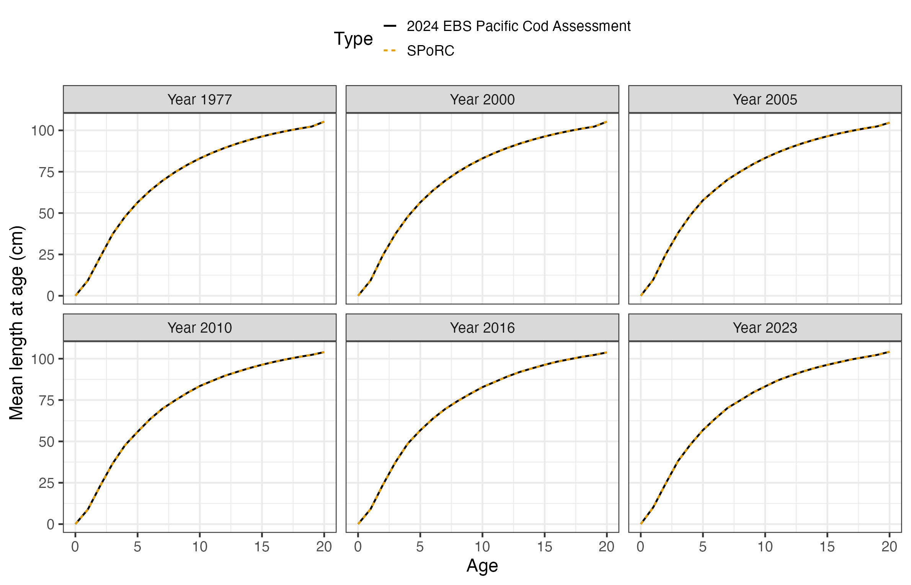
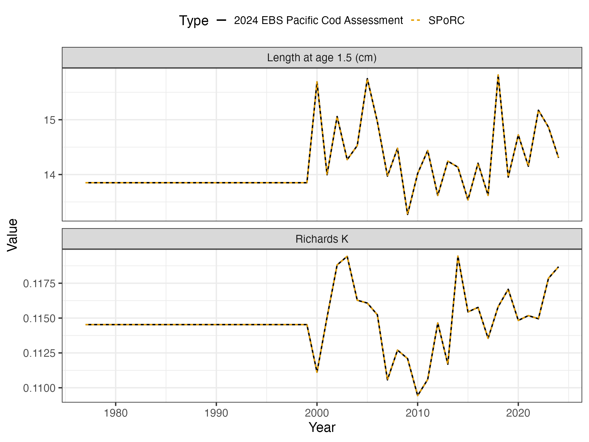
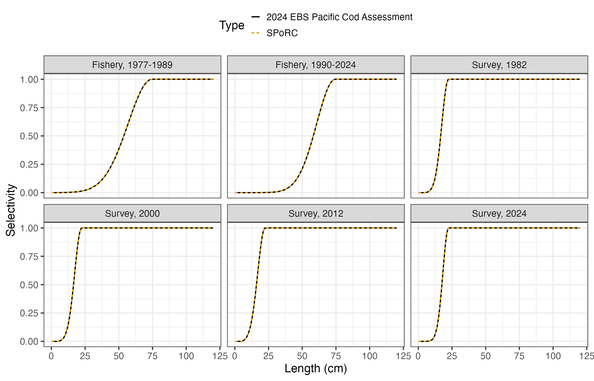
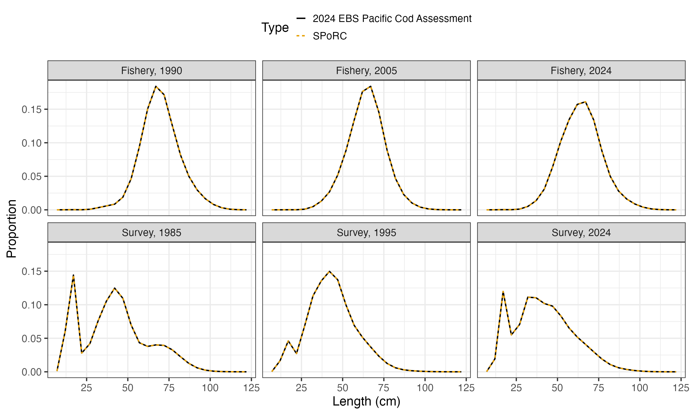
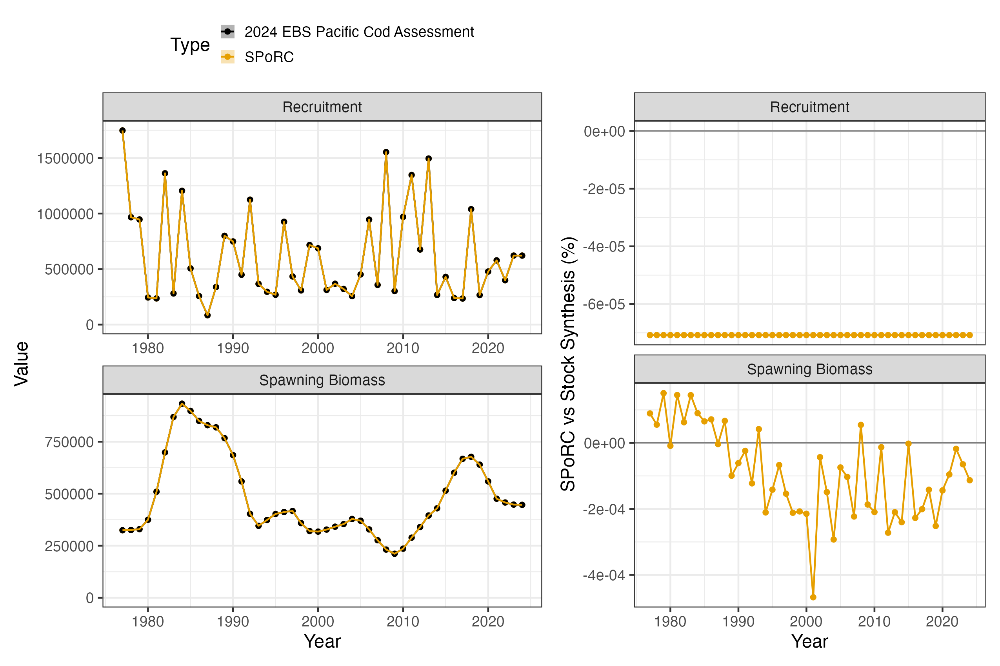
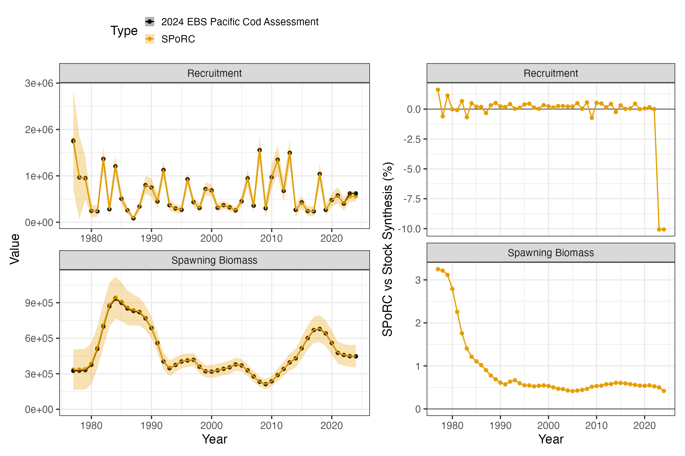

Case Study: EBS Pacific Cod
ae_ebs_pacific_cod_case_study.RmdOverview
This case study reproduces Model 24.1 of the 2024 eastern Bering Sea
Pacific cod assessment (Barbeaux et al. 2024), run in Stock Synthesis 3,
in SPoRC.
The model is one area, one sex and one season, with a single fishery and a single bottom trawl survey. Everything is fit at length, on 121 population length bins reported to 24 five centimetre data bins.
| Source | Years | Observations | Likelihood |
|---|---|---|---|
| Catch | 1977–2024 | 48 | Lognormal |
| Survey abundance, in numbers | 1982–2024 | 42 | Lognormal, estimated extra SD |
| Fishery length compositions | 1977–2024 | 48 | Multinomial |
| Survey length compositions | 1982–1999, 2024 | 19 | Multinomial |
| Survey age compositions | 2000–2023 | 23 | Multinomial |
Ages run to , with ages observed from 0 to 12 and 12 accumulating. Population lengths are 121 one centimetre bins and the compositions are recorded on 24 bins of 5 cm from 4.5. Model years run to . Recruitment is age 0 entering at the start of the year, mean recruitment with , and natural mortality is fixed at 0.3866.
library(SPoRC)
library(dplyr)
library(ggplot2)
data("sgl_rg_ebs_pcod_data")
dat <- sgl_rg_ebs_pcod_data
yrs <- dat$years
n_yrs <- length(yrs)
ages <- dat$ages
n_ages <- length(ages)
n_reg <- 1; n_sex <- 1; n_fish <- 1; n_srv <- 1
sigmaR <- dat$rec$sigmaRThe object carries the model inputs, the assessment’s maximum
likelihood estimate in dat$mle, used both as a starting
point and to check the objective before anything is optimized, and the
reported quantities in dat$ss3, which are the comparison
target.
Model dimensions
One area, one sex and one season, so the region, sex and season
subscripts in vignette("c_model_equations") all collapse to
one. The lengths given here are the population bins the fish are grown
on, not the coarser bins the compositions are reported on.
input_list <- Setup_Mod_Dim(
years = yrs, ages = ages, lens = dat$lens,
n_regions = n_reg, n_sexes = n_sex, n_fish_fleets = n_fish, n_srv_fleets = n_srv,
n_seas = 1, n_pop = 1, natal_region = 1, verbose = FALSE
)Recruitment
Recruitment is a mean with annual deviations rather than a stock
recruit function. The start year’s ages 1 to 20 are set by twenty early
deviations, and equil_init_age_strc = "stoch_all" estimates
and penalizes all twenty, including the one at the accumulator age,
which is what the assessment does. The alternative,
"stoch_plus_grp", holds that last deviation at zero and
leaves it out of the penalty.
A separate initial equilibrium recruitment is penalized towards
with the assessment’s standard deviation,
over the average age. Initial fishing mortality is held at the
assessment’s value, since SPoRC has no equilibrium catch to
fit it against.
ave_age <- 1 / dat$growth$M - 0.5
input_list <- Setup_Mod_Rec(
input_list = input_list,
rec_model = "mean_rec", rec_dd = "global", rec_lag = 0, SR_ref_yr = 1, t_spawn = 0,
sigmaR_spec = "fix", ln_sigmaR = array(log(sigmaR), dim = c(2, 1, n_reg)), sigmaR_switch = 1,
do_rec_bias_ramp = 1,
bias_year = dat$rec$bias_years - yrs[1] + 1,
max_bias_ramp_fct = dat$rec$max_bias_adj,
RecDevs_spec = "est_shared_pop_r", RecDevs_pen_center = "fixed", dont_est_recdev_last = 0,
init_age_strc = 2, equil_init_age_strc = 2,
InitDevs_spec = "est_shared_pop_r", InitDevs_pen_center = "fixed",
rec_region_prop_spec = NULL,
use_rinit = 1, Use_rinit_pen = 1, rinit_pen_sd = sigmaR / ave_age,
init_F_form = "abs", init_F_spec = "fix",
init_F_par = array(log(dat$mle$init_F), dim = c(n_reg, 1, n_fish)),
ln_global_R0 = dat$mle$ln_R0, ln_rinit = dat$mle$ln_R0 + dat$mle$regime
)The bias ramp years are given in deviation-index space, 1 being the first model year, and each early deviation reads the ramp at its own birth year.
Biological dynamics
Natural mortality is fixed. Growth is the Richards curve, which generalises von Bertalanffy with a sixth parameter raising the lengths to a power, and weight at age is derived from it through the weight-length relationship rather than supplied as data.
Three arguments carry the assessment’s growth conventions.
growth_tv_model = c(L1 = "iid", K = "iid") names which
parameters vary and how, with growth_tv_years giving each
its own active years. growth_tv_link = "logit" makes each
deviation an offset inside the parameter’s bounds.
growth_tv_type = "cohort" carries size at age forward
cohort by cohort. The deviations’ standard deviations live in the first
stream of growth_pe_pars, one slot per growth parameter in
the order L1, L2, K,
CV1, CV2, rho, with a placeholder
in the four slots that do not vary. The second stream belongs to the
semi-parametric surface and is unread here.
Maturity at age is taken from the assessment rather than modelled,
because maturity is length based and fixed there. LenBinMap
maps the 121 population bins onto the 24 the compositions are recorded
on.
g <- dat$growth
pe_start <- array(log(0.05), dim = c(1, n_reg, max(4, n_ages, 6), n_sex, 2))
pe_start[1, 1, 1:6, 1, 1] <- log(c(g$dev_sd[["L1"]], 1, g$dev_sd[["K"]], 1, 1, 1))
MatAA <- array(0, dim = c(1, n_reg, n_yrs, 1, n_ages, n_sex))
MatAA[1, 1, , 1, , 1] <- dat$MatAA
input_list <- Setup_Mod_Biologicals(
input_list = input_list,
WAA = NULL, MatAA = MatAA,
fit_lengths = 1, SizeAgeTrans = NA,
AgeingError = dat$AgeingError,
M_spec = "fix", Fixed_natmort = array(g$M, dim = c(1, n_reg, n_yrs, n_ages, n_sex)),
addtocomp = dat$comp$addtocomp_len, comp_const_obs = 1, addtosrvidx = 0, addtofishidx = 0,
growth_model = "richards",
ln_growth_pars = array(log(dat$mle$growth[c("L1", "L2", "K", "CV1", "CV2", "rho")]), dim = c(1, n_reg, n_sex, 6)),
growth_spec = "est_all", growth_fix = !g$est[c("L1", "L2", "K", "CV1", "CV2", "rho")],
growth_A1 = g$A1,
growth_A2 = if(g$A2 == 999) "Linf" else g$A2,
growth_len_lower = dat$lens_lower, growth_L0 = dat$lens_lower[1],
growth_plus_group = "mixture",
growth_tv_model = c(L1 = "iid", K = "iid"), growth_tv_years = g$dev_years,
growth_tv_link = "logit",
growth_par_bounds = g$bounds[c("L1", "L2", "K", "CV1", "CV2", "rho"), ],
growth_pe_pars = pe_start,
growth_tv_sigma_spec = "fix",
growth_tv_type = "cohort",
waa_model = "wt_len", wt_len_pars = dat$wtlen,
LenBinMap = dat$LenBinMap
)The control file records a second reference age of 999 to mean that
is the asymptote itself, which is what the conditional on
growth_A2 translates. Two ageing error definitions are
carried in AgeingError, a biased reader through 2007 and an
unbiased one after.
Movement and tagging
One area, so nothing moves and nothing is tagged.
input_list <- Setup_Mod_Movement(input_list = input_list, use_fixed_movement = 1,
Fixed_Movement = NA, do_recruits_move = 0)
input_list <- Setup_Mod_Tagging(input_list = input_list, use_conv_fish_tagging = 0)Catch and fishing mortality
The assessment solves fishing mortality from the catch with its
hybrid method, so it spends no parameters on
.
SPoRC estimates a deviation per year against the
assessment’s catch error with no penalty on the deviations, which fits
the catch almost exactly on both sides.
input_list <- Setup_Mod_Catch_and_F(
input_list = input_list,
ObsCatch = dat$ObsCatch, UseCatch = dat$UseCatch,
Use_F_pen = 0, ln_F_mean_spec = "fix",
sigmaC_spec = "fix", ln_sigmaC = array(log(dat$catch_se), dim = c(n_reg, n_yrs, 1, n_fish))
)Fishery compositions
No fishery index and no fishery ages, lengths only. Two arguments
carry conventions rather than choices.
FishLenComps_sel = "length" applies selectivity at length
and sums over ages instead of folding it to age first, and
fish_waa_selected = 1 puts the catch in biomass on the
selection weighted weight at age.
t_fish is 0.5 because a fishing fleet’s compositions are
read at mid season whatever month the data file records, so the
age-length key, the selected weight behind the catch biomass, and the
compositions all sit there.
joint <- function(n) paste0("spltRjntS_Year_1-terminal_Fleet_", seq_len(n))
none <- function(n) paste0("none_Year_1-terminal_Fleet_", seq_len(n))
input_list <- Setup_Mod_FishIdx_and_Comps(
input_list = input_list,
t_fish = array(0.5, dim = c(n_reg, 1, n_fish)),
FishLenComps_sel = "length", fish_waa_selected = 1,
ObsFishIdx = array(NA_real_, dim = c(n_reg, n_yrs, 1, n_fish)),
ObsFishIdx_SE = array(NA_real_, dim = c(n_reg, n_yrs, 1, n_fish)),
UseFishIdx = array(0, dim = c(n_reg, n_yrs, 1, n_fish)),
fish_idx_type = rep("none", n_fish), FishIdx_LikeType = rep("lognormal", n_fish),
ObsFishAgeComps = array(NA_real_, dim = c(n_reg, n_yrs, 1, length(dat$obs_ages), n_sex, n_fish)),
UseFishAgeComps = array(0, dim = c(n_reg, n_yrs, 1, n_fish)),
ObsFishLenComps = dat$ObsFishLenComps, UseFishLenComps = dat$UseFishLenComps,
ISS_FishLenComps = dat$ISS_FishLenComps,
FishAgeComps_LikeType = rep("none", n_fish),
FishLenComps_LikeType = rep("Multinomial", n_fish),
FishAgeComps_Type = none(n_fish), FishLenComps_Type = joint(n_fish)
)Survey index and compositions
The index is in numbers, so weight at age never enters it. The extra
standard deviation the assessment estimates is added to the observed
standard errors here rather than estimated, which is the one parameter
of the assessment’s that SPoRC folds into data. Ages come
through the ageing error definitions, lengths on the data bins, all read
at mid year.
t_srv <- array(dat$t_srv, dim = c(n_reg, 1, n_srv))
input_list <- Setup_Mod_SrvIdx_and_Comps(
input_list = input_list,
ObsSrvIdx = dat$ObsSrvIdx, ObsSrvIdx_SE = dat$ObsSrvIdx_SE,
UseSrvIdx = dat$UseSrvIdx,
sigmaSrvIdx_spec = "est_additive",
ln_sigmaSrvIdx = log(dat$mle$extra_sd),
srv_idx_type = rep("abd", n_srv), SrvIdx_LikeType = rep("lognormal", n_srv),
ObsSrvAgeComps = dat$ObsSrvAgeComps, UseSrvAgeComps = dat$UseSrvAgeComps,
ISS_SrvAgeComps = dat$ISS_SrvAgeComps,
ObsSrvLenComps = dat$ObsSrvLenComps, UseSrvLenComps = dat$UseSrvLenComps,
ISS_SrvLenComps = dat$ISS_SrvLenComps,
SrvAgeComps_LikeType = rep("Multinomial", n_srv),
SrvLenComps_LikeType = rep("Multinomial", n_srv),
SrvAgeComps_Type = joint(n_srv), SrvLenComps_Type = joint(n_srv),
SrvLenComps_sel = "length"
)Fishery selectivity
A double normal at length on the population bins, in two blocks. The 1977 to 1989 block replaces the peak and the ascending width and keeps the rest of the base block’s parameters, so two of the six are estimated in each block.
fish_sel_dbnrml_raw leaves the ascending limb as a raw
Gaussian rather than rescaling it, and
fish_sel_dbnrml_startbin anchors the limb at the first data
bin rather than the first population bin, with bins below taking
times the selectivity there.
input_list <- Setup_Mod_Fishsel_and_Q(
input_list = input_list,
fish_selex_type = "length",
fish_sel_model = c("dbnrml_Fleet_1_Block_1", "dbnrml_Fleet_1_Block_2"),
cont_tv_fish_sel = paste0("none_Fleet_", seq_len(n_fish)),
fish_sel_blocks = c(paste0("Block_1_Year_1-", dat$sel$blocks[[4]][2] - yrs[1] + 1, "_Fleet_1"),
paste0("Block_2_Year_", dat$sel$blocks[[4]][2] - yrs[1] + 2, "-terminal_Fleet_1")),
fish_q_blocks = paste0("none_Fleet_", seq_len(n_fish)),
fish_fixed_sel_pars_spec = rep("est_all", n_fish),
fish_sel_dbnrml_raw = matrix(c(1, 0), n_fish, 2, byrow = TRUE),
fish_sel_dbnrml_startbin = rep(dat$startbin, n_fish),
fish_q_spec = rep("fix", n_fish)
)Block years are given in year-index space, 1 being the first model year.
Survey selectivity
The same double normal with independent annual deviations on the
ascending width from 1982, which is cont_tv_srv_sel = "iid"
with the process error standard deviation held at the assessment’s
value. Catchability is estimated.
input_list <- Setup_Mod_Srvsel_and_Q(
input_list = input_list,
srv_selex_type = "length",
srv_sel_model = paste0("dbnrml_Fleet_", seq_len(n_srv)),
cont_tv_srv_sel = paste0("iid_Fleet_", seq_len(n_srv)),
srv_sel_blocks = paste0("none_Fleet_", seq_len(n_srv)),
srv_q_blocks = paste0("none_Fleet_", seq_len(n_srv)),
srv_fixed_sel_pars_spec = rep("est_all", n_srv),
srv_sel_devs_spec = rep("est_all", n_srv),
srvsel_pe_pars_spec = rep("fix", n_srv),
srv_sel_dbnrml_startbin = rep(dat$startbin, n_srv),
srv_q_spec = rep("est_all", n_srv),
t_srv = t_srv
)Weighting
One Francis weight per composition type. Stock Synthesis adds a
constant to every observed and expected proportion and then
renormalizes, so each composition likelihood is the SPoRC
value scaled by
.
Dividing the weight by that factor absorbs it.
va <- dat$var_adj
w_len_fish <- va$value[va$factor == 4 & va$fleet == dat$fish_fleets[1]]
w_len_srv <- va$value[va$factor == 4 & va$fleet == dat$srv_fleets[1]]
w_age_srv <- va$value[va$factor == 5 & va$fleet == dat$srv_fleets[1]]
n_obs_lens <- ncol(dat$LenBinMap); n_obs_ages <- length(dat$obs_ages)
per_fleet <- function(w, n_fl) {
arr <- array(1, dim = c(n_reg, n_yrs, 1, n_sex, n_fl))
for(f in seq_len(n_fl)) arr[, , , , f] <- w
arr
}
input_list <- Setup_Mod_Weighting(
input_list = input_list,
Wt_Catch = 1, Wt_FishIdx = 0, Wt_SrvIdx = 1, Wt_Rec = 1, Wt_F = 1, Wt_Tagging = 0,
Wt_FishAgeComps = per_fleet(0, n_fish),
Wt_FishLenComps = per_fleet(w_len_fish / (1 + n_obs_lens * dat$comp$addtocomp_len), n_fish),
Wt_SrvAgeComps = per_fleet(w_age_srv / (1 + n_obs_ages * dat$comp$addtocomp_age), n_srv),
Wt_SrvLenComps = per_fleet(w_len_srv / (1 + n_obs_lens * dat$comp$addtocomp_len), n_srv)
)Starting at the assessment’s estimate
Every parameter is set to the assessment’s estimate and the model is evaluated there without optimizing, which is what makes the specification checkable one piece at a time. The bridge helper does this in one call; the pieces are the recruitment ratio, the early deviations less their own bias corrections, log fishing mortality as a fixed mean plus deviations, the growth and selectivity deviations rescaled from the assessment’s unit normal form, and catchability.
source(system.file("tests", "testthat", "helper-bridge_ebs_pcod.R", package = "SPoRC"))
input_list <- seed_ebs_pcod_mle(build_ebs_pcod_input(dat), dat)
seed <- fit_model(input_list$data, input_list$par, input_list$map,
do_optim = FALSE, silent = TRUE)The comparison before anything is optimized, against a report file carrying six significant digits:
numbers at age 1.0e-03 %
spawning biomass 4.7e-04 %
recruitment 7.1e-05 %
total biomass 4.8e-04 %
predicted catch 4.9e-04 %
survey index 3.7e-04 %
weight at age, three definitions 5.0e-04 %
growth parameters by year 4.2e-04 %
selectivity at length, both fleets 5.0e-07 (absolute)
expected length compositions 4.5e-06 (absolute)Weight at age is checked against all three of the assessment’s definitions, the start-of-year population weight, the mid-year weight, and the fishery’s selection weighted weight, because the three separate the growth curve from the key and the key from selectivity. Mean length at age is checked in years spanning the time-varying period, and under cohort growth a late year only reproduces if every earlier year’s increment did.
SPoRC writes each likelihood component as a proper
density where the assessment drops normalising constants, so the
comparison subtracts exactly what it omits:
| Component |
SPoRC less constants |
Assessment |
|---|---|---|
| Survey index | -59.065728 | -59.0658 |
| Fishery lengths | 119.364878 | 119.365 |
| Survey lengths | 103.268624 | 103.269 |
| Survey ages | 57.440030 | 57.4390 |
| Recruitment, main and early | 5.065827 | 5.06581 |
| Initial equilibrium offset | 1.907037 | 1.90704 |
| Growth deviations | 10.415703 | 10.41565 |
| Survey selectivity deviations | 8.432246 | 8.43225 |
against the assessment’s reported total of 246.832. The catch is fit almost exactly on both sides, since the assessment conditions fishing mortality on it.




Fitting and comparison
est <- fit_model(input_list$data, input_list$par, input_list$map,
do_optim = TRUE, newton_loops = 3, silent = TRUE)
est$sdrep <- RTMB::sdreport(est, hessian.fixed = est$he(est$env$last.par.best))220 parameters against the assessment’s 174. The two counts reconcile
exactly: SPoRC estimates 48 annual fishing mortality
deviations where the hybrid solver costs the assessment nothing, and
holds two parameters the assessment estimates, initial fishing mortality
and the survey’s extra standard deviation, so
.
Every other block is one for one, including the 50 growth deviations,
the 43 survey selectivity deviations and the 20 initial age
deviations.
The objective falls 0.73 from the assessment’s estimate and the fit converges to a maximum gradient of with a positive definite Hessian.
| Median | Maximum | |
|---|---|---|
| Spawning biomass | +0.55 % | +3.2 % |
| Recruitment | +0.19 % | -10.1 % |
Growth returns within two tenths of a percent on every parameter, which is the check that matters for this bridge:
SPoRC |
Assessment | |
|---|---|---|
| at age 1.5 | 13.83635 | 13.85056 |
| , the asymptote | 112.22362 | 112.26005 |
| 0.11432 | 0.11453 | |
| Richards | 1.48810 | 1.48560 |


Why the two differ
Everything in the population dynamics, the growth, the observation model and the selectivity agrees at the report’s own print precision, and so does every likelihood component. The refit moves spawning biomass by half a percent.
The drift is the recruitment convention. The assessment declares its
deviations a devvector, which ADMB constrains to sum to
zero, so
is the geometric mean recruitment of the deviation years by construction
and the assessment’s main deviations sum to
.
SPoRC leaves its deviations free under the penalty, so
and their mean slide together: on refitting the mean deviation is
and
falls 0.106, from 13.341 to 13.235, leaving their product almost
unchanged.
The survey’s extra standard deviation differs the same way. The
assessment estimates it, so how much weight the index carries is settled
alongside everything else. SPoRC has no estimated extra
standard deviation on an index, so here it is added to the observed
standard errors and held at the assessment’s value. That is not a small
term:
against observed standard errors of
to
,
so it roughly doubles them, and the index likelihood is unrecognisable
without it. Holding it costs nothing at the assessment’s estimate, where
the total standard error is identical and the index likelihood
reproduces to six digits, but it fixes the index’s weight where the
assessment could still move it. This is the second of the two parameters
the count above holds rather than estimates, initial fishing mortality
being the first.
The gradient at the assessment’s estimate is a bit larger on the
growth parameters, the recruitment deviations and the fishing mortality
deviations even though every reported quantity matches. That is the
hybrid solver again: the assessment conditions
on the catch rather than estimating it, so SPoRC’s partials
omit the implicit
and its catch likelihood stands in for the exact solve.